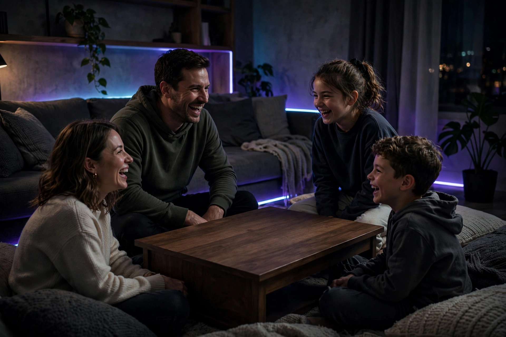

Word games families can play with no board

Some game nights start with a missing box, a flat battery, or a cabin with nothing in the cupboard but mugs. Word games cover that night completely: the equipment is talking. The problem is that most word-game lists are written for classrooms, where a teacher leads, every player is roughly the same age, and the point is vocabulary practice. A family table is different. A seven-year-old, a parent, and a grandparent are not competing on equal footing, the fastest adult can accidentally win everything, and a game that needs writing shuts out a child who cannot spell yet. This guide takes five long-running spoken games — 20 Questions, Categories, Word Association, Don't Say It, and the I Went Shopping memory chain — and rebuilds them for that table: fairness scoring, oral-only options, and a rotation that fills exactly one half-hour.
The five games at a glance
| Game | Players | Equipment | Writing needed | Energy | Best for |
|---|---|---|---|---|---|
| 20 Questions | 3 or more | None | No | Calm, focused | Deduction and careful listening |
| Categories | 2 or more | Paper helps; oral team version works | Yes (adaptable) | Fast bursts | Scored competition that rewards originality |
| Word Association | 2 or more | None | No | Fast, silly | Warm-up and car rides |
| Don't Say It | 3 or more | Word slips or spoken prompts | No | Loud, theatrical | Describing skills and big laughs |
| I Went Shopping | 3 or more | None | No | Slow build | Memory, and the night's finale |
20 Questions: deduction everyone can play
The thinker picks an object and — in the classic framing described by the Lexercise family games guide — opens with a single clue: animal, vegetable, or mineral. Everyone else takes turns asking questions the thinker may answer only with yes or no, and no further clues are given. The Word Aware family sheet allows a third answer, "maybe," and permits a clue when the guessers are clearly on the wrong track; for a family table, that softer version is the right one, because a stuck round teaches nothing. If the group cannot guess within 20 questions, the thinker names the object and takes another turn; a correct guesser becomes the next thinker.
The fairness lever is the category of the object, not the question count. Ask the youngest player to think of things in the room, in the kitchen, or in a picture book the family knows, while adults take "anything in the world." The deduction skill is identical — narrowing a field with each answer — but the search space matches the player. One more habit makes the game sing: the guessers must say what each answer ruled out. "Not alive, not bigger than a chair" turns a guessing chain into reasoning spoken out loud, which is the part kids carry into every other game.
Categories: the fairness scoring that saves the game
Categories is the one game in this set with a score worth keeping, because its scoring fixes the fastest-adult problem by itself. Players agree on a list of categories — the OneStopEnglish procedure uses six, such as sport, profession, item of clothing, country, food and drink, and animals — then a letter is chosen. Against the clock, each player writes one entry per category starting with that letter: for S, skiing, singer, shirt, Spain, soup, seal. In the team version, the first team to fill every category shouts "Stop!" and the round ends.
The scoring is the genius part. As the Categories reference describes it, an entry nobody else wrote scores 2 points, while an entry shared with another player scores only 1. Speed stops being the whole game: the obvious answer is worth less precisely because it is obvious, and a child who names an odd animal beats a parent who names the common one. Two practical guards come with the game. Test each letter before playing a round for points — the OneStopEnglish procedure warns that some combinations have no answer at all, giving the example that there is no sport beginning with Q — and let pre-readers play in a team with an adult scribe who may write but not suggest. The commercial descendant of this game, Scattergories (Parker Brothers, 1988), is a reimplementation of the Guggenheim variant, which is a useful pedigree to know: the paper original came first, and it costs nothing.
Word Association and Don't Say It: the speed rounds
Word Association is the simplest game in this guide. One player says a word; the next must say a word related to it; any player may challenge a connection, and the player who made it has to explain it. Play continues until a word is repeated or a connection cannot be explained — the Word Aware sheet's example chain runs Egypt – Mummy – Dad – beard – Santa Claus – Christmas – trees – leaves, which shows how gloriously sideways a chain can drift while still being defensible. For families, add one rule: a challenge must be curious, not prosecutorial. "How does that connect?" earns an explanation and the chain survives; the game only ends on a repeat or a genuine dead end.
Don't Say It reverses the skill. Words are written on slips and placed in a hat — or, in the fully oral version, one player whispers a word to the describer. The describer must get the table to say the word without using the word itself. It is the funniest game in the set with mixed ages, because the constraint produces wonderfully crooked definitions, and it quietly trains the exact skill 20 Questions tests from the other side: knowing what a thing is by its features. A related warm-up from the same Word Aware sheet, "Alison is an acrobat in Asia," asks each player to build a name, a profession, and a place all starting with one letter — an easier on-ramp for younger players before the describing starts.
I Went Shopping: the memory chain
The Glow Scotland word games sheet describes the chain plainly: the first player says "I went shopping and I bought…" and names an item beginning with A; the second player repeats the whole list and adds an item beginning with B; and so on through the alphabet. The list is the game — by the letter M, reciting it perfectly is a genuine achievement, and the player who drops an item gets the biggest laugh of the night, not a penalty. Play it cooperatively: the table wins or loses together against the alphabet. That single change makes it the ideal closer, because the last game of the night should end with everyone on the same side. Help for young players is built in — the table may hum, mime, or give the first sound of the missing item, but never just say it.
A 30-minute no-board rotation
Run the games in this order and the evening needs no other planning:
- Minutes 0–5, Word Association. Two chains, challenges allowed. Success looks like: everyone has spoken within the first minute.
- Minutes 5–15, 20 Questions. Two rounds, one child thinker with a narrowed field, one adult thinker with the whole world.
- Minutes 15–25, Categories. Three letters, six categories, unique answers scoring 2 and shared answers 1. Pre-readers ride with a scribe.
- Minutes 25–30, I Went Shopping. One cooperative chain against the alphabet. Stop wherever it collapses; that letter is the score to beat next time.
Pick by energy and age
- Wound-up kids, burning energy: Don't Say It. Standing up, gesturing, and shouting guesses is the game working as intended.
- Quiet, tired table: 20 Questions. One voice at a time, and the thinking is the entertainment.
- Ages spanning 6 to 70: Categories in teams, because the unique-answer scoring lets a child's odd knowledge outscore an adult's speed.
- Nobody can write yet: skip the paper entirely — Word Association, 20 Questions, and the memory chain are complete games spoken aloud.
FAQ
Which word games need literally nothing? Word Association, 20 Questions, and I Went Shopping need no paper, no slips, and no preparation. Categories and Don't Say It work best with a few written words but adapt to spoken prompts.
How do you stop one adult winning everything? Use Categories' scoring — unique answers are worth double — and team formats with an adult scribe who writes but does not suggest.
What age can start? A child who can answer yes and no can guess in 20 Questions; the thinker role and Categories' writing come later, with team play bridging the gap.